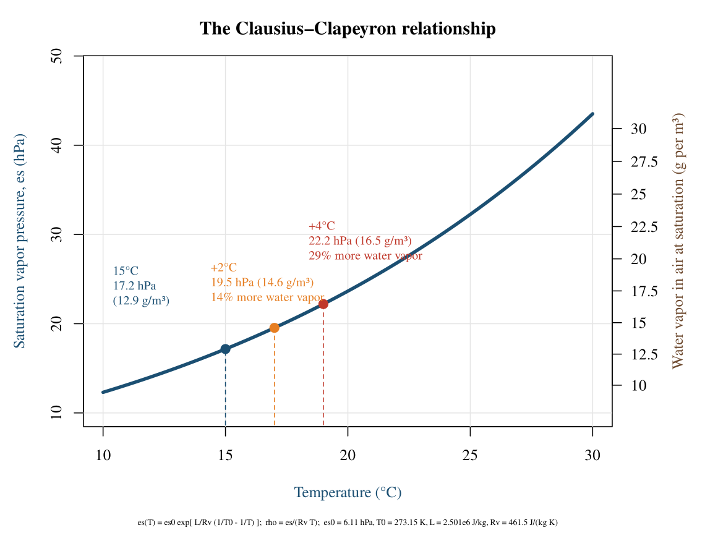
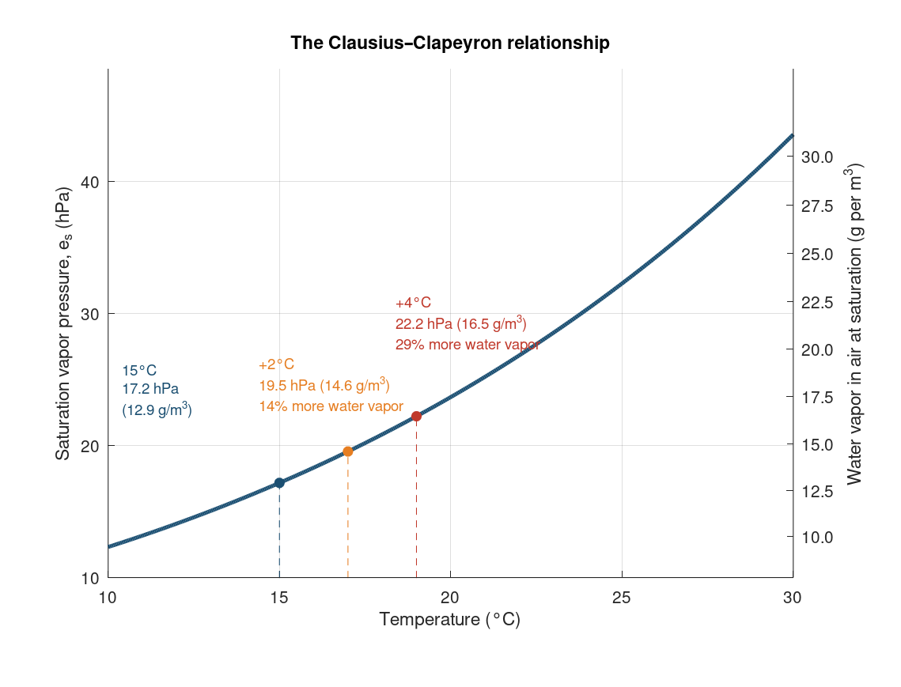

Chapter 12 · Climate Change
The Clausius-Clapeyron relationship
Saturation vapor pressure and water vapor content vs temperature with +2 and +4 C annotations.
Source: Chapter 12 draft; author code (Word comment, truncated at 2048 characters) completed from the figure image
Author code was truncated; the remainder was reconstructed to match the draft image.
No external data file: values are small and embedded in the code.

Code: clausius_clapeyron.py · image: figure_python.png
"""Chapter 12, Figure X.3 - The Clausius-Clapeyron relationship.
Based on the code pasted as a comment in the Chapter 12 draft (J. Gannon). The pasted code was cut off part-way
through the third annotation, so the end of the script (right-hand axis, footer, save) was completed to match the
figure in the draft."""
import numpy as np
import matplotlib.pyplot as plt
es0 = 6.11 # hPa at T0
T0 = 273.15 # K
L = 2.501e6 # J/kg, latent heat of vaporization
Rv = 461.5 # J/(kg*K), gas constant for water vapor
def es(T_celsius):
"""Saturation vapor pressure (hPa), constant-L Clausius-Clapeyron"""
T = T_celsius + 273.15
return es0 * np.exp((L / Rv) * (1.0 / T0 - 1.0 / T))
def rho_sat(T_celsius):
"""Saturation absolute humidity (g/m^3) from the ideal gas law: rho = e / (Rv * T)"""
T = T_celsius + 273.15
e_pa = es(T_celsius) * 100.0 # hPa -> Pa
return e_pa / (Rv * T) * 1000.0 # kg/m^3 -> g/m^3
T = np.linspace(10, 30, 400)
es_vals = es(T)
rho_vals = rho_sat(T)
def es_to_rho(e):
return np.interp(e, es_vals, rho_vals)
def rho_to_es(r):
return np.interp(r, rho_vals, es_vals)
plt.rcParams['font.family'] = 'DejaVu Serif'
fig, ax = plt.subplots(figsize=(7.6, 5.8))
ax.plot(T, es_vals, color='#1b4f72', lw=2.4, zorder=3)
T_ref = 15.0
for dT, color in [(0, '#1b4f72'), (2, '#e67e22'), (4, '#c0392b')]:
Tp = T_ref + dT
ax.plot([Tp, Tp], [0, es(Tp)], ls='--', lw=1.1, color=color, alpha=0.8, zorder=2)
ax.plot(Tp, es(Tp), 'o', color=color, ms=6, zorder=4)
ax.annotate(f'{T_ref:.0f}°C\n{es(T_ref):.1f} hPa\n({rho_sat(T_ref):.1f} g/m³)',
xy=(T_ref, es(T_ref)), xytext=(T_ref-4.6, es(T_ref)+5.0), fontsize=9.3, color='#1b4f72', linespacing=1.4)
ax.annotate(f'+2°C\n{es(T_ref+2):.1f} hPa ({rho_sat(T_ref+2):.1f} g/m³)\n'
f'{(es(T_ref+2)/es(T_ref)-1)*100:.0f}% more water vapor',
xy=(T_ref+2, es(T_ref+2)), xytext=(T_ref-0.6, es(T_ref+2)+3.0), fontsize=9.3, color='#e67e22', linespacing=1.4)
ax.annotate(f'+4°C\n{es(T_ref+4):.1f} hPa ({rho_sat(T_ref+4):.1f} g/m³)\n'
f'{(es(T_ref+4)/es(T_ref)-1)*100:.0f}% more water vapor',
xy=(T_ref+4, es(T_ref+4)), xytext=(T_ref+3.4, es(T_ref+4)+5.0), fontsize=9.3, color='#c0392b', linespacing=1.4)
# ---- completed from here (the original code was cut off) ----
ax.set_xlim(10, 30); ax.set_ylim(10, 48.5)
ax.set_xlabel('Temperature (°C)', fontsize=12)
ax.set_ylabel('Saturation vapor pressure, $e_s$ (hPa)', fontsize=12, color='#1b4f72')
ax.grid(alpha=0.25)
ax.spines[['top']].set_visible(False)
sec = ax.secondary_yaxis('right', functions=(es_to_rho, rho_to_es))
sec.set_ylabel('Water vapor in air at saturation (g per m³)', fontsize=12, color='#6e4a2f')
ax.set_title('The Clausius–Clapeyron relationship', fontsize=14, fontweight='bold')
fig.text(0.5, 0.01, r'$e_s(T)=e_{s0}\exp[\frac{L}{R_v}(\frac{1}{T_0}-\frac{1}{T})]$; $\rho_{v,sat}=e_s/(R_vT)$. '
r'$e_{s0}$=6.11 hPa at $T_0$=273.15 K, L=2.501e6 J/kg, $R_v$=461.5 J/(kg K)', ha='center', fontsize=8)
fig.tight_layout(rect=(0, 0.04, 1, 1))
fig.savefig('figure_python.png', dpi=150)

Code: clausius_clapeyron.R · image: figure_r.png

# Chapter 12, Figure X.3 - The Clausius-Clapeyron relationship (saturation vapor pressure vs temperature)
es0 <- 6.11; T0 <- 273.15; L <- 2.501e6; Rv <- 461.5
es <- function(Tc) es0 * exp((L / Rv) * (1 / T0 - 1 / (Tc + 273.15))) # hPa
rho <- function(Tc) es(Tc) * 100 / (Rv * (Tc + 273.15)) * 1000 # g/m3
Tc <- seq(10, 30, length.out = 400)
png("figure_r.png", width = 1140, height = 870, res = 150)
par(mar = c(6, 4.5, 3, 5), family = "serif")
plot(Tc, es(Tc), type = "n", xlim = c(10, 30), ylim = c(10, 48.5), xlab = "Temperature (°C)",
ylab = "Saturation vapor pressure, es (hPa)", main = "The Clausius–Clapeyron relationship", col.lab = "#1b4f72")
grid(col = "grey90", lty = 1)
lines(Tc, es(Tc), col = "#1b4f72", lwd = 3.5)
Tref <- 15; cols <- c("#1b4f72", "#e67e22", "#c0392b"); dT <- c(0, 2, 4)
for (i in 1:3) { Tp <- Tref + dT[i]; segments(Tp, 0, Tp, es(Tp), lty = 2, col = cols[i]); points(Tp, es(Tp), pch = 19, col = cols[i], cex = 1.3) }
lab <- function(d) sprintf("%+d°C\n%.1f hPa (%.1f g/m³)\n%.0f%% more water vapor", d, es(Tref + d), rho(Tref + d), (es(Tref + d) / es(Tref) - 1) * 100)
text(10.4, es(Tref) + 5, sprintf("15°C\n%.1f hPa\n(%.1f g/m³)", es(Tref), rho(Tref)), col = cols[1], adj = c(0, 0), cex = 0.8)
text(14.4, es(17) + 3, lab(2), col = cols[2], adj = c(0, 0), cex = 0.8)
text(18.4, es(19) + 5, lab(4), col = cols[3], adj = c(0, 0), cex = 0.8)
# right-hand axis: absolute humidity at saturation, placed at the matching vapor-pressure positions
rt <- seq(10, 30, by = 2.5); axis(4, at = approx(rho(Tc), es(Tc), rt)$y, labels = rt, las = 1)
mtext("Water vapor in air at saturation (g per m³)", side = 4, line = 3, col = "#6e4a2f")
mtext("es(T) = es0 exp[ L/Rv (1/T0 - 1/T) ]; rho = es/(Rv T); es0 = 6.11 hPa, T0 = 273.15 K, L = 2.501e6 J/kg, Rv = 461.5 J/(kg K)", side = 1, line = 4.5, cex = 0.55)
dev.off()

Code: clausius_clapeyron.m · image: figure_matlab.png

% Chapter 12, Figure X.3 - The Clausius-Clapeyron relationship (saturation vapor pressure vs temperature)
es0 = 6.11; T0 = 273.15; L = 2.501e6; Rv = 461.5;
es = @(Tc) es0 * exp((L / Rv) * (1 / T0 - 1 ./ (Tc + 273.15))); % hPa
rho = @(Tc) es(Tc) * 100 ./ (Rv * (Tc + 273.15)) * 1000; % g/m3
Tc = linspace(10, 30, 400);
fig = figure('Position', [100 100 760 580]);
ax = axes('Position', [0.12 0.16 0.76 0.74]); hold(ax, 'on');
plot(ax, Tc, es(Tc), 'Color', [0.106 0.31 0.447], 'LineWidth', 2.4);
Tref = 15; cols = [0.106 0.31 0.447; 0.9 0.494 0.133; 0.753 0.224 0.169]; dT = [0 2 4];
for i = 1:3
Tp = Tref + dT(i);
plot(ax, [Tp Tp], [0 es(Tp)], '--', 'Color', cols(i,:));
plot(ax, Tp, es(Tp), 'o', 'MarkerFaceColor', cols(i,:), 'Color', cols(i,:));
end
text(ax, 10.4, es(15)+7, sprintf('15°C\n%.1f hPa\n(%.1f g/m^3)', es(15), rho(15)), 'Color', cols(1,:), 'FontSize', 9);
text(ax, 14.4, es(17)+5, sprintf('+2°C\n%.1f hPa (%.1f g/m^3)\n%.0f%% more water vapor', es(17), rho(17), (es(17)/es(15)-1)*100), 'Color', cols(2,:), 'FontSize', 9);
text(ax, 18.4, es(19)+7, sprintf('+4°C\n%.1f hPa (%.1f g/m^3)\n%.0f%% more water vapor', es(19), rho(19), (es(19)/es(15)-1)*100), 'Color', cols(3,:), 'FontSize', 9);
xlim(ax, [10 30]); ylim(ax, [10 48.5]); grid(ax, 'on'); box(ax, 'off');
xlabel(ax, 'Temperature (°C)'); ylabel(ax, 'Saturation vapor pressure, e_s (hPa)');
title(ax, 'The Clausius–Clapeyron relationship');
% right-hand axis: absolute humidity at saturation, labelled at the matching vapor-pressure positions
rt = 10:2.5:30;
ax2 = axes('Position', get(ax, 'Position'), 'Color', 'none', 'YAxisLocation', 'right', 'XTick', [], 'XLim', [10 30], 'YLim', [10 48.5]);
set(ax2, 'YTick', interp1(rho(Tc), es(Tc), rt), 'YTickLabel', arrayfun(@(v) sprintf('%.1f', v), rt, 'UniformOutput', false));
ylabel(ax2, 'Water vapor in air at saturation (g per m^3)');
print(fig, '-dpng', '-r150', 'figure_matlab.png');